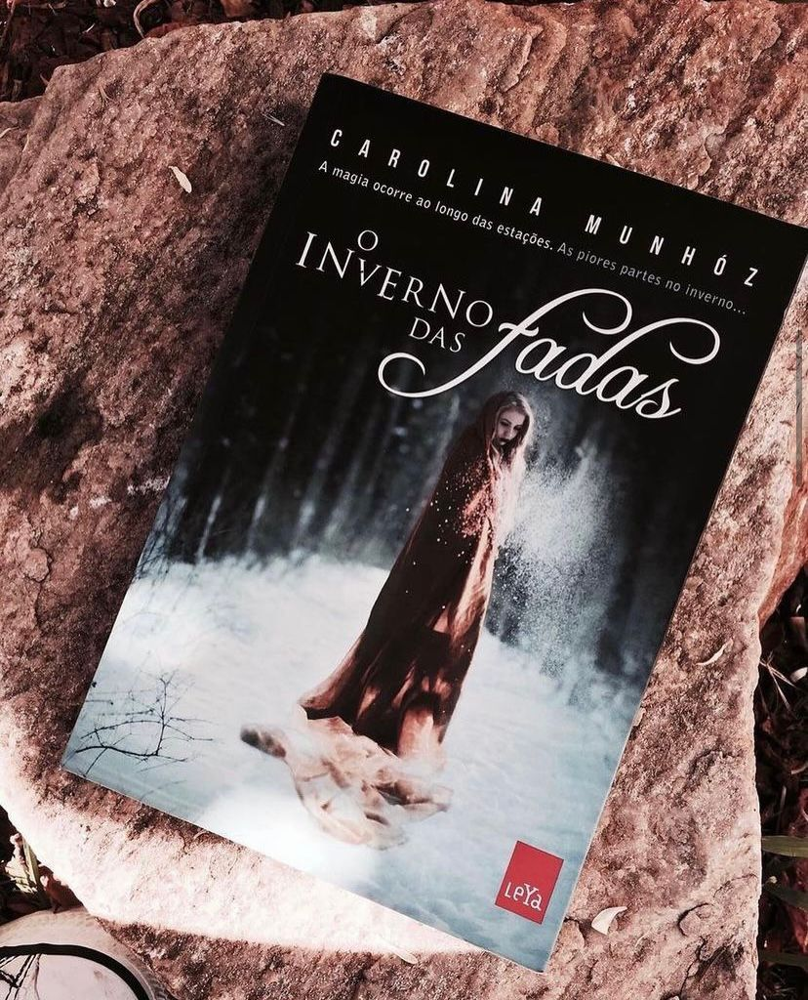

O Inverno das Fadas
Resolvi trazer aqui um livro escrito por uma autora brasileira. Bom, antes de tudo preciso dizer que esse não muito meu estilo de livro, digo a parte romântica da história. Não gosto de livros e filmes de romance então essa parte me atrapalhou um pouco mas, vamos lá...
Sophia Coldheart é uma fada “Leanan Sídhe”uma espécie que serve de musa para humanos alcançarem o sucesso. Uma fada-amante. Mas isso tem um preço. Ao mesmo tempo em que os leva a fama, ela se alimenta de suas vitais e sua sanidade, levando-os à loucura e consequentemente à morte. Uma vida intensa e extraordinária com um fim trágico. Mas o que aconteceria se um humano resistisse à sua sedução e fizesse a própria Sophia sentir-se atraída por ele?
A escrita da autora é bem leve e cada capítulo é o nome de uma música que provavelmente você conhece, além claro de todo o mundo místico do livro que é bem elaborado e criativo.
Então se você gosta de romance e quer ler algo diferente além de dar uma chance para autora mulher e brasileira fica a dica!